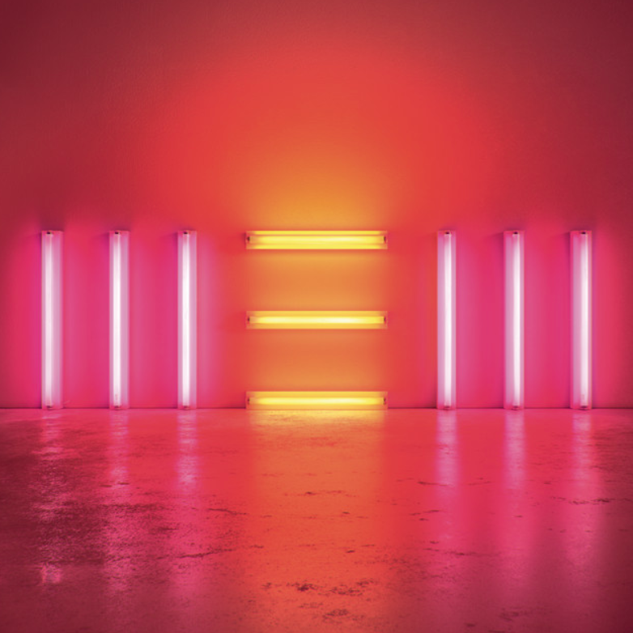

NEW
Paul McCartney


New (stylised as NEW) is the sixteenth solo studio album by English musician Paul McCartney. It was released on 11 October 2013 through MPL Communications, Hear Music, and Universal International. The album was his first since 2007's Memory Almost Full to consist entirely of new compositions.[2] The album was executive produced by Giles Martin, with production by Martin, Mark Ronson, Ethan Johns and Paul Epworth and it was mastered by Ted Jensen at Sterling Sound, New York. McCartney has stated that New was inspired by recent events in his life as well as memories of his pre-Beatles history.
- Save Us
- Alligator
- On My Way To Work
- Queenie Eye
- Early Days
- New
- Appreciate
- Everybody Out There
- Hosanna
- I Can Bet
- Looking At Her
- Road